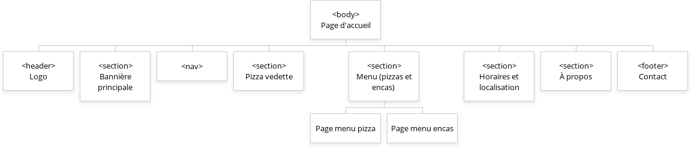
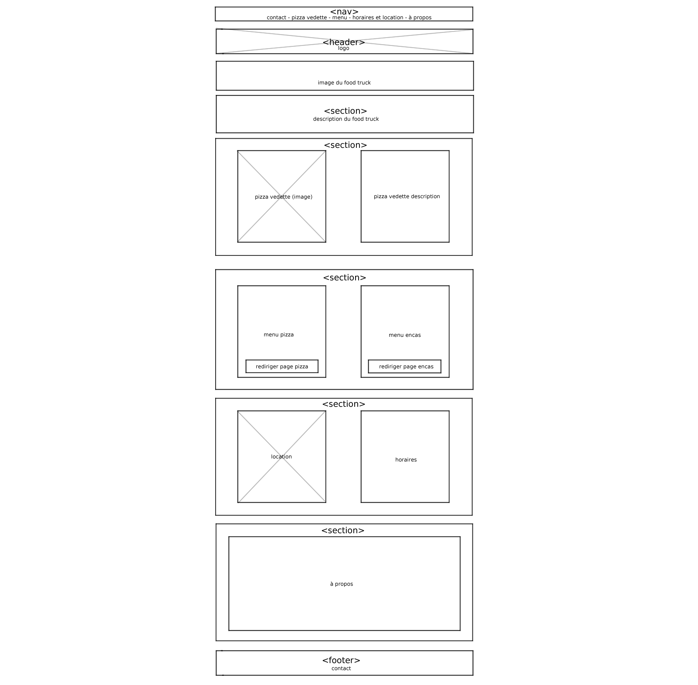
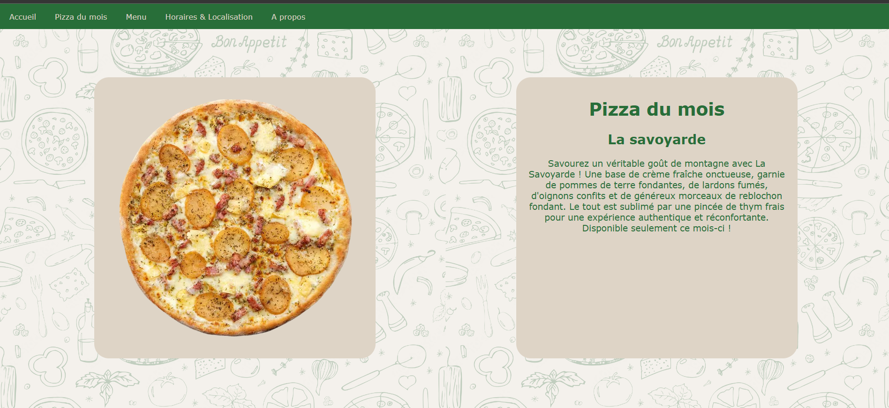
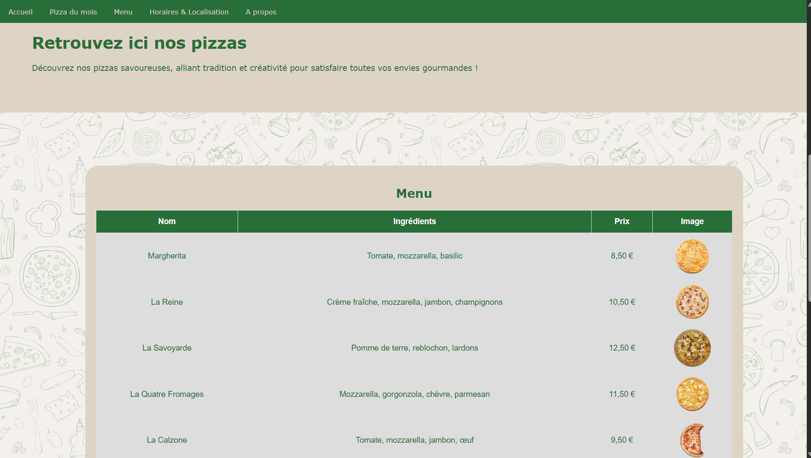
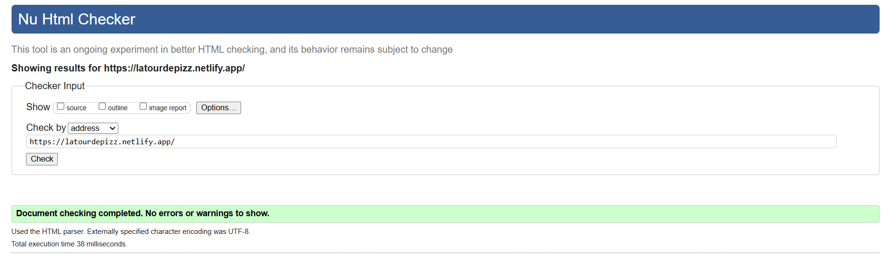
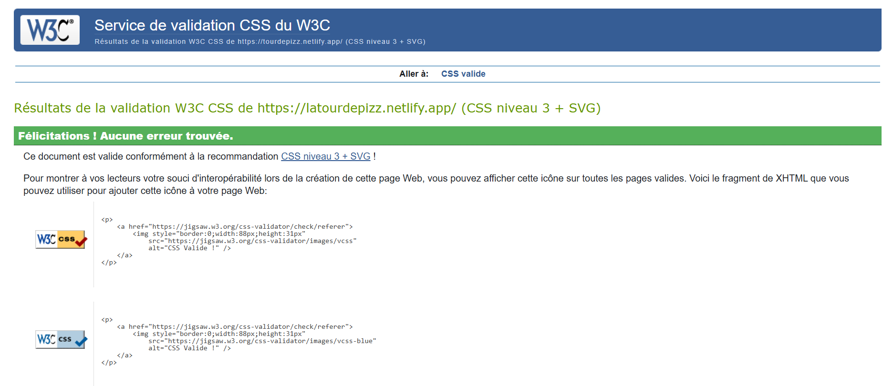

Front-end website development built exclusively with HTML and CSS.
During my first year of the B.U.T. MMI program, the assignment was to create a website for a food truck. I chose to design a site for a mobile pizzeria called La Tour de Pizz’.
The goal was to build two pages: a landing page and a menu page. The site had to be responsive, clear, and highlight the food products effectively.
First, I started by mapping out a sitemap to decide what content to include and how to organize everything. Here is the visual sitemap I designed for the home page (created using Gloomaps):

Next, I created a wireframe to get a clear visual layout of the site before writing any code. I used Clip Studio Paint to position the on-page elements. The structure of the landing page is detailed here, featuring a header, a footer, and several content sections:

On the home page, I introduced the pizzeria's concept, showcased a signature pizza, included an “About Us” section, and provided practical details such as opening hours and location.

On the menu page, I organized the dishes and drinks using HTML tables displaying the name, price, and a photo for each item. I also implemented a language toggle button (French / English) powered by a lightweight JavaScript snippet.

The site was built entirely using HTML and CSS within Visual Studio Code.
I applied coursework principles to structure my pages and style the content using custom CSS, particularly through semantic tags.
I worked with fixed positioning, rounded corners, and a coherent color palette to ensure an enjoyable reading experience.
To add a touch of interactivity, I used JavaScript for the language switcher.
The site is 100% front-end, built adhering to accessibility basics and responsive design principles. It is fully compliant with W3C standards!


This project helped me understand how to structure a clean website, display data properly using tables, and introduce interactivity with JavaScript.
I also learned how to validate code compliance using the W3C validator, which helped me identify and fix syntax errors.
Visit the live site